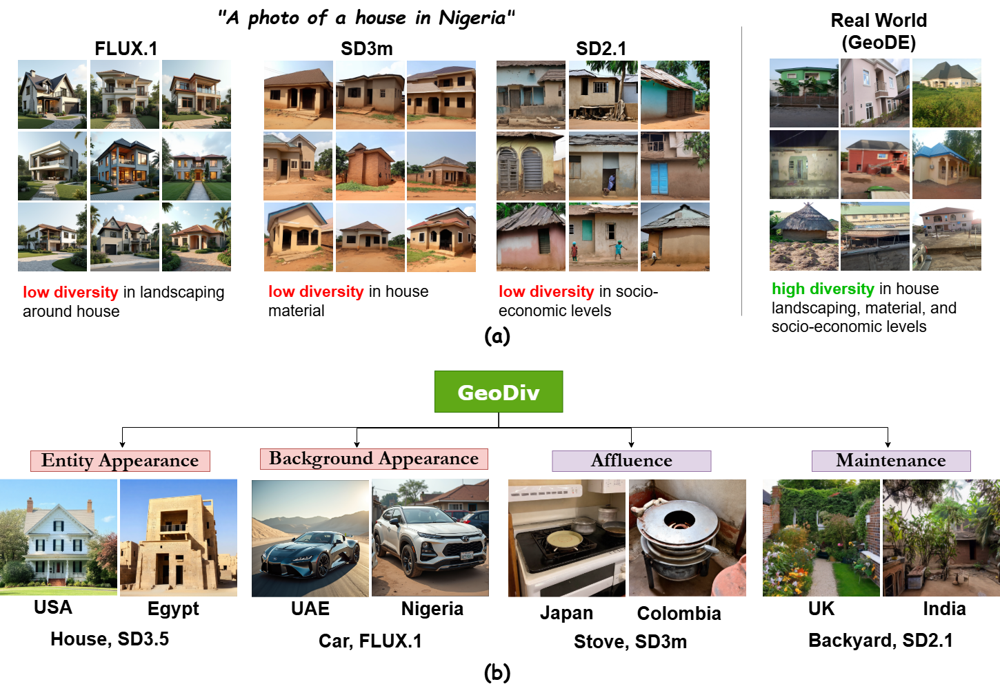
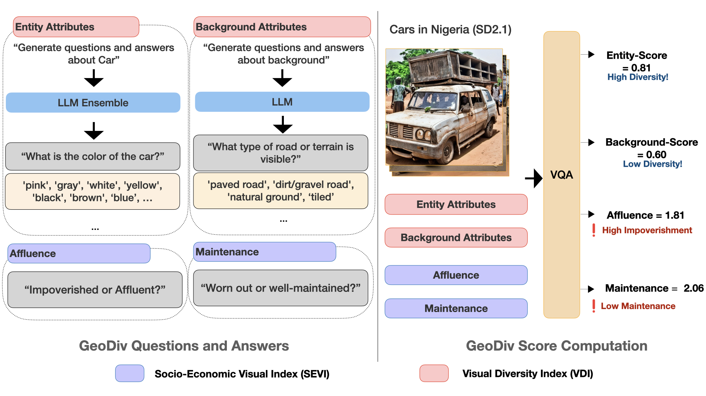
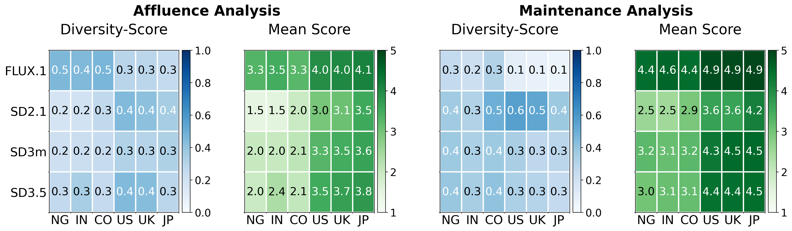
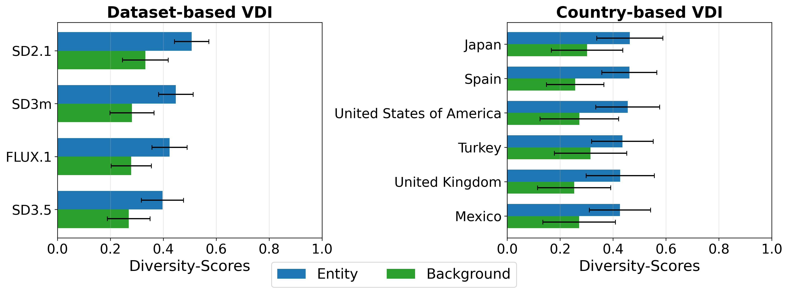

Text-to-image (T2I) models are rapidly gaining popularity, yet their outputs often lack geographical diversity, reinforce stereotypes, and misrepresent regions. Given their broad reach, it is critical to rigorously evaluate how these models portray the world. Existing diversity metrics either rely on curated datasets or focus on surface-level visual similarity, limiting interpretability. We introduce GeoDiv (see above), a framework leveraging large language and vision-language models to assess geographical diversity along two complementary axes: the Socio-Economic Visual Index (SEVI), capturing economic and condition-related cues, and the Visual Diversity Index (VDI), measuring variation in primary entities and backgrounds. Applied to images generated by models such as Stable Diffusion and FLUX.1-dev across $10$ entities and $16$ countries, GeoDiv reveals a consistent lack of diversity and identifies fine-grained attributes where models default to biased portrayals. Strikingly, depictions of countries like India, Nigeria, and Colombia are disproportionately impoverished and worn, reflecting underlying socio-economic biases. These results highlight the need for greater geographical nuance in generative models. GeoDiv provides the first systematic, interpretable framework for measuring such biases, marking a step toward fairer and more inclusive generative systems.
Proposed Framework: GeoDiv

Visual Diversity Index (VDI)
To assess the visual variation of images across geographies, we define the Visual Diversity Index (VDI) along two axes: Entity-Appearance and Background-Appearance.
- Entity-Appearance examines the visual attributes of entities (e.g., houses, cars) within a country. We leverage an ensemble of LLMs to generate candidate question-answer (Q&A) sets. Finally, a VQA model answers these questions for each image. The resulting distribution of answers across the images is used to compute per-question entity diversity.
- Background-Appearance assesses the scene context (e.g., presence of modern infrastructure, type of roads, etc). We divide background into indoor and outdoor categories. An LLM first generates a fixed set of contextual questions and answer choices for each category (an example outdoor-category question: What type of road or terrain is visible?). Each image is first classified by a VQA model as indoor or outdoor. Based on the prediction, category-specific questions and answers are input to the VQA model. The resulting answer distributions are then utilized to calculate background diversity.
Socio-Economic Visual Index (SEVI)
To capture economic status and visual cues of physical upkeep across geographies, we introduce the Socio-Economic Visual Index (SEVI) with two dimensions: Affluence and Maintenance. An attentive reader may enquire about the difference between the two. Affluence reflects the overall wealth depicted in an image, while Maintenance evaluates the physical condition of the primary entity, both crucial to understand societal well-being. For each image, a Vision-Language Model (VLM) predicts scores for these dimensions on a $1$-$5$ scale:
Maintenance (1–5): Severely Damaged → Poor → Moderate → Well-Maintained → Excellent.
Diversity Computation
Using the distributions obtained from the VDI and SEVI questions, we quantify their diversity by computing the Hill Number, calculated by exponentiating Shannon's entropy. Consider a question $q_k$ (related to either SEVI or VDI attributes), having a set of answers denoted by $\mathcal{A}_k$. Given that the values of an attribute can be too large to enumerate exhaustively, we generate an approximate set of answers per question by leveraging the world knowledge of the LLMs, denoting the same as $\hat{\mathcal{A}_k}$. Since the number of plausible answers can vary across different questions, we compute a Normalized Hill Number (ranging between $0$ and $1$) to enable fair comparison between questions with varying answer-set sizes, as defined below:
where $\hat{P_k}$ is the answer distribution for $q_k$, and $H(\cdot)$ denotes Shannon entropy. Diversity for Affluence and Maintenance are computed directly using Diversity-Score. The Entity-Appearance and Background-Appearance Diversity are calculated by averaging Diversity-Score over all related questions for the individual dimensions.
What Does GeoDiv Reveal About Geo-Diversity?
SEVI

The above diagram displays the SEVI Diversity and Mean Ratings across Datasets and Selected Countries. India (IN), Nigeria (NG), and Colombia (CO) are seen to receive lower SEVI ratings, while the US, UK, and Japan (JP) rank highest—revealing strong socio-economic biases in country-level image representations. Strikingly, none of the models generate images spanning diverse socio-economic strata.
VDI

The above diagram displays the VDI Scores across (a) Datasets, and (b) Selected Countries. Model-wise VDI diversities are similar, with SD2.1 achieving higher scores than the others. Mexico and the UK show low entity and background diversity, while Japan scores highest.